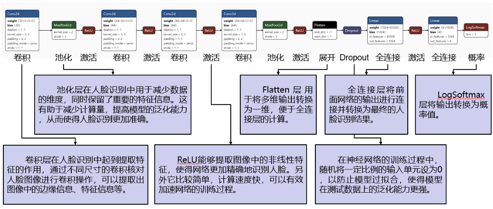

Ruilan: CNN Face Recognition System
CNN-Based Python Face Recognition System
Background
This facial recognition system employs deep learning convolutional neural network (CNN) techniques to achieve accurate face identification.
CNNs have emerged as the state-of-the-art approach for face recognition thanks to their ability to learn complex visual features from large amounts of labelled face image data, achieving higher precision compared to traditional methods.
Architecture
The system utilizes a CNN architecture consisting of:
- An input layer that receives face images
- Multiple convolutional layers that extract visual features like edges and patterns
- Pooling layers that reduce the dimensionality of the feature maps
- Fully-connected layers that perform the final classification into identities
Convolutional and pooling layers constitute the core of the network, enabling it to learn general image features that help distinguish different faces.
The CNN model was developed using the PyTorch library in Python, leveraging tools for machine learning and deep learning.
Accuracy
- Over 97% accuracy on the YaleFace-A set
- Over 98% accuracy on a small-scale, personally created dataset (built through the "capture" function in the system, containing RGB three-channel color photos of 8 different individual)
Screenshots


Future Work
Future work will focus on improving the model's robustness to variations in lighting conditions, poses and expressions to achieve human-level recognition performance.